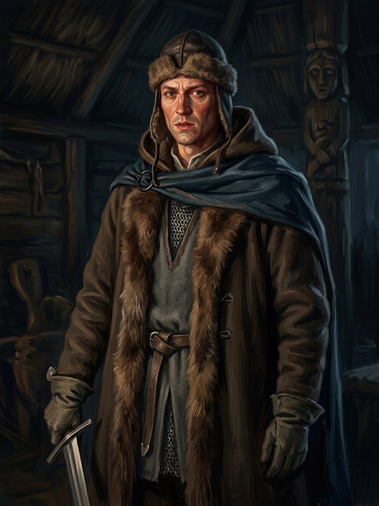

Švitrigaila¶
Summary¶
Švitrigaila (c. 1370 - 10 Feb 1452), youngest son of Algirdas and Uliana of Tver, brother of Jogaila and Skirgaila and cousin of Vytautas. A hot-blooded, resentful prince who feels cheated of his “fair share”, he rebels against his brothers (1392-94), allies with the Order (1402) and Moscow (1408-09), spends nine years in prison at Kremenets, and is raised Grand Duke by the Lithuanian lords after Vytautas’s death in 1430. Overthrown by Žygimantas Kęstutaitis in 1432 and beaten at Pabaiskas in 1435, he ends as lord of Volhynia, still plotting. In Book V he is the East’s champion and the pretender whom the dying forest courts.
Švitrigaila

Švitrigaila · character¶
Type |
character |
Years |
c. 1370–1452 |
Status |
Historical record |
Note |
Grand Duke of Lithuania (1430–1432), youngest son of Algirdas; rival to Žygimantas in the brutal civil war. |
Appearance & tells¶
Lanky, restless and flushed with blood when challenged, a younger and more frantic version of Jogaila. He dresses in a mismatch: Lithuanian fur, Polish silk and Rus’ mail, which sums up his divided loyalties. His voice is high and too loud, once given to song (Book III ch. 8). He rides in on rumours and exits through the back door: disguised as a merchant to Marienburg (1402), over the border to Moscow (1408), out of Kremenets in a night raid (1418), out of Ašmena in 1432 with his pregnant wife left behind. At sixty he still looks “like a child looking at a pie in a window” at Trakai in the days after Vytautas’s death (Book IV ch. 25).
Want · Need · Lie · Truth¶
Want (external) |
The grand-ducal throne he believes is his due, and vengeance on the cousins and brothers who denied him his share. |
Need (internal) |
To be loyal to a realm rather than to a grievance, and to wait. |
Lie they believe |
Destiny (and the old gods, and the East) will hand him the throne; he deserves what his brothers have. |
Truth they learn (or refuse) |
Refused: the forest that courts him and promises the old realm turns its back after Pabaiskas, and what he chases is a dead man’s road. |
Arc by book¶
Book II (1393). A rebel in his early twenties at Vitebsk, quarrelling with Jogaila over the regency (ch. 12).
Book III (1402-1409). He sneaks to Marienburg as a merchant and signs with the Order, returning in July 1402 with the Knights’ raid on Medininkai (ch. 5); defects to Moscow (1408-09, ch. 10); in Book III ch. 8 Henė’s price for the Order’s fall is “your cousin’s blood”, meaning Švitrigaila’s, and Vytautas refuses, to the relief of Ona, who hears Švitrigaila’s high, too-loud voice in the yard below, now without its song.
Book IV (1418-1430). Escapes Kremenets on the night of 24 Mar 1418 (ch. 9); waits in the corridor at Trakai while Jogaila sits with the dying Vytautas (ch. 26) and sends his greetings at noon on 27 Oct (“tell him to wait”, ch. 29). The lords raise him as Grand Duke within days (ch. 30).
Book V (1430-1450). Confirmed by Jogaila on 7 Nov 1430 and then abandoned by Poland (ch. 3); signs at Christmemel with the Order (19 Jun 1431); the Root-Mother courts him with promises of the old realm (ch. 11); overthrown at Ašmena (ch. 9) and, after the field of Pabaiskas (ch. 13), dreams of a road in the forest with someone waiting at its end (ch. 15). He fights on from Polotsk and Volhynia and dies at Lutsk in 1452.
Power & magic¶
Tier 0, no gift and no bargain of his own (Henė’s offer of his blood in Book III ch. 8 is refused by Vytautas, not accepted by him). He matters to the magic as an engine: his wars feed the Unbinding, and the dead of Pabaiskas (1 Sep 1435) lie unburned by the thousand until the wolves spend a winter burning them (Book V ch. 16). The Root-Mother, awake again in 1432, courts him with promises of the old realm and then turns her back on him after Pabaiskas (ch. 11, 13). He is one of the saga’s examples that men need no magic to ruin a realm.
Record vs saga¶
[Historical record]: Son of Algirdas and Uliana of Tver, born before 1370 or in the 1370s (the Polish sources give c. 1355 or 1373; en.wikipedia is inconsistent). Baptised Bolesław (Roman Catholic) in 1386. In 1392-94 he rebelled against Jogaila over Vitebsk and was sent to Kraków; in January 1402 he went to Marienburg disguised as a merchant and signed a treaty on 2 Mar 1402; in July 1402 he invaded with the Knights toward Vilnius (Medininkai burned). He defected to Moscow in 1408-09 (Vasily I gave him towns), returned to Vytautas in June 1409 and was arrested and held for nine years, finally at Kremenets, until the night of 24 Mar 1418, when Dashko Ostrogski and about 500 men took Kremenets and freed him; he went to Wallachia and Hungary and lived near Duke Ernest of Austria and Sigismund. No source puts him at Lutsk in 1429. The Lithuanian lords elected him Grand Duke after Vytautas’s death (late Oct 1430), against the Horodło clause; Jogaila approved on 7 Nov 1430, then withdrew under Polish pressure. Poland seized Podolia in Oct-Nov 1430; Christmemel treaty with the Order 19 Jun 1431; Polish invasion of Volhynia and the Czartorysk truce (1 Sep 1431). Overthrown on the night of 31 Aug / 1 Sep 1432 at Ašmena by Žygimantas Kęstutaitis (his pregnant wife was seized) and beaten again there on 8 Dec 1432; Pabaiskas (1 Sep 1435). The Order abandoned him at the Peace of Brest (31 Dec 1435). Compromise with Poland in 1437, driven to Moldavia in 1438, back in Podolia and Volhynia after 1440; Casimir gave him Volhynia and Podolia in 1442; died at Lutsk on 10 Feb 1452 (VLE; en.wikipedia’s burial place is inconsistent).
[The saga’s invention]: His flushed temperament and loud, high voice; Henė naming his blood as the price of the Order’s fall (Book III ch. 8); the Root-Mother courting him (Book V ch. 11); the recurring dream-road (ch. 15); the greeting “tell him to wait” at Vytautas’s deathbed. Book IV and V keep him out of Lutsk (1429) because no source places him there.
Pronunciation¶
švi-tri-GAI-la · IPA /ʃvʲɪtʲrʲɪˈɡɐɪɫɐ/ · English sound-alike “shvih-trih-GUY-lah”. Stress on the third syllable; the šv as “shv”. Polish Świdrygiełło, Ruthenian Svitrigailo; baptised Bolesław in 1386.
Appearances¶
Book II: ch. 11 (mention), 12 (his rebellion).
Book III: ch. 5 (the flight to the Order), 6, 8 (Henė’s offer, Ona’s reaction), 10 (Moscow) and the afterword.
Book IV: ch. 9 (the escape), 22, 25, 26 (the corridor), 29, 30.
Book V: ch. 2, 3 (his elevation), 6, 8, 9 (the coup), 11, 12, 13 (Pabaiskas), 15 (his fall), 18, 24.
In Book V: election after 27 Oct 1430, Jogaila’s approval on 7 Nov 1430, the coup night of 31 Aug 1432 and the Ašmena battle on 8 Dec 1432.
Relations
Antagonist of: V · The Wolf’s Legacy — mortal, exiled
Child of: Algirdas · Uliana of Tver (Julijona Tverietė), Algirdas’s second wife
Enemy: Žygimantas Kęstutaitis (1432–1440)
Member of: Algirdaičiai (Algirdas’s line)
Rules: Grand Duchy of Lithuania (1430–1432)
Sibling: Jogaila
Took part in: Battle of Ašmena: Žygimantas defeats Švitrigaila · Battle of Pabaiskas · Polish lords seize Podolia after Vytautas’s death — Victim of it. · Treaty of Christmemel (Švitrigaila and the Order) · Truce of Czartorysk · Žygimantas’s coup at Ašmena
Timeline¶
Year |
Event |
Book |
|---|---|---|
1430-11 |
V · The Wolf’s Legacy |
|
1431-06-19 |
V · The Wolf’s Legacy |
|
1431-09-01 |
V · The Wolf’s Legacy |
|
1432-08-31 |
V · The Wolf’s Legacy |
|
1432-12-08 |
V · The Wolf’s Legacy |
|
1435-09-01 |
V · The Wolf’s Legacy |
Connections¶
graph LR
algirdaiciai["Algirdaičiai (Algirdas's line)"]
algirdas["Algirdas"]
book5["V · The Wolf's Legacy"]
ev_asmena_battle["Battle of Ašmena: Žygimantas defeats Švitrigaila"]
ev_christmemel["Treaty of Christmemel (Švitrigaila and the Order)"]
ev_coup_1432["Žygimantas's coup at Ašmena"]
ev_czartorysk_truce["Truce of Czartorysk"]
ev_pabaiskas["Battle of Pabaiskas"]
ev_podolia_seized["Polish lords seize Podolia after Vytautas's death"]
gdl["Grand Duchy of Lithuania"]
jogaila["Jogaila"]
svitrigaila["Švitrigaila"]
uliana_tver["Uliana of Tver (Julijona Tverietė), Algirdas's second wife"]
zygimantas["Žygimantas Kęstutaitis"]
svitrigaila -->|Member of| algirdaiciai
svitrigaila -->|Rules| gdl
svitrigaila -->|Enemy| zygimantas
svitrigaila -->|Took part in| ev_coup_1432
svitrigaila -->|Took part in| ev_pabaiskas
svitrigaila -->|Antagonist of| book5
svitrigaila -->|Took part in| ev_podolia_seized
svitrigaila -->|Took part in| ev_christmemel
svitrigaila -->|Took part in| ev_czartorysk_truce
svitrigaila -->|Took part in| ev_asmena_battle
algirdas -->|Parent of| svitrigaila
jogaila -->|Sibling| svitrigaila
uliana_tver -->|Parent of| svitrigaila
style svitrigaila stroke-width:3px